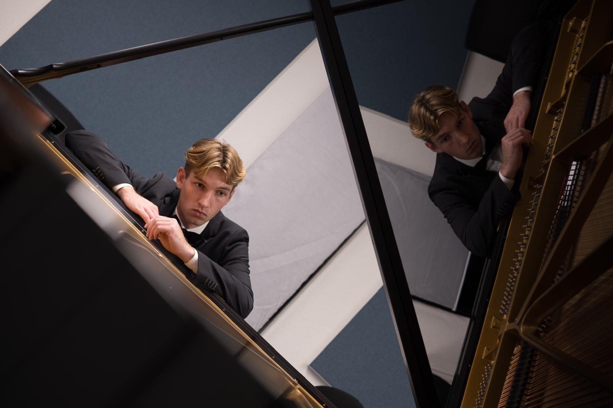
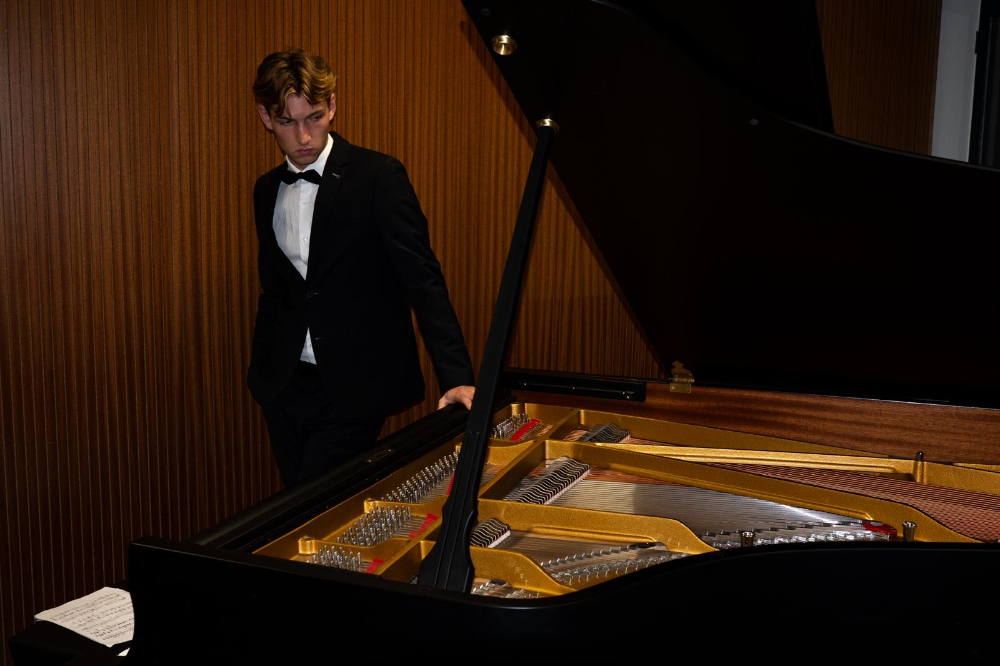

Teaching — studio & online
Half of every lesson is listening.
What a lesson with me looks like, how it develops over a year, and what I believe about teaching — written down so you know what to expect before you get in touch.



01About the teacher

Ive Snijders
I have been teaching piano since the beginning of my studies at the conservatory. Initially, my only ambition was to become a performing musician, but I have since developed a dream of combining performing with teaching. Teaching gives me the opportunity to share my greatest passion with others while also making a meaningful difference in people's lives.
Personal guidance and an individual approach are at the heart of my lessons. This allows me to teach students of all ages and levels. I specialise in classical piano, but that does not mean you will only play classical music. You decide what you want to play, and I will, of course, help you explore the repertoire and offer advice on your choices.
Music education in the Netherlands has been at an alarmingly low level for many years. While other European countries offer complete secondary school programmes dedicated to music, students in the Netherlands often have to make do with just half an hour of private lessons per week. This is one of the factors contributing to the extremely low percentage of Dutch students pursuing professional music education. At the classical department of the conservatory in Maastricht, more than 90% of the students are international. This, in turn, contributes to a significant shortage of new Dutch-speaking music teachers.
In my lessons, my aim is not necessarily to train the next generation of concert pianists. Instead, I make sure my students are given all the tools they need to pursue their dreams in the world of music. I want to make a future in music accessible to everyone, help reduce inequality of opportunity, and take music education in the Netherlands to a new level.
— Ive
Anatomy of an hour
02Drawn to scale
Arrive & listen
You play whatever you practised, start to finish, without interruption. I just listen and take notes.
Hands
Technique, but always taken from the music in front of us — never scales for their own sake.
Repertoire
The heart of the lesson. We pick the two or three bars that are holding the piece back and solve them together: fingering, sound, pedal, shape. I play a lot here — you should hear what we're aiming for, not just read about it. By the end of this half hour something in the piece should sound different from when you walked in.
The week ahead
A short written practice plan: what, in what order, for how long.
A 45-minute lesson keeps the same shape, compressed. Online lessons too — with a second camera on your hands if you have one.
How it develops
03Month, term, year
Getting comfortable
Sitting, hand shape, reading in both clefs. We find out how you learn best — by ear, by eye, by analysing — and lean into it.
- One complete short piece
- A practice routine that fits your week
- Reading at a slow, steady pulse
Building a repertoire
Three or four pieces in different styles, chosen together. Technique starts coming from what the pieces need, so it never feels like homework.
- Hands independent of each other
- First pedalling and dynamics
- Sight-reading five minutes a day
Playing for people
Once a year my students play for each other at an informal house concert — optional and friendly. For many it's the moment the piano stops being private.
- A short programme you can perform
- Learning new pieces on your own
- Optional exam or conservatory goals
“Talent is mostly attention — and attention can be taught.”

Sound first, notes second.
A wrong note played beautifully teaches you more than a right note played without listening. We always start from how it should sound.
Slow is not a punishment.
Practising slowly is the fastest way to learn anything. I'll show you how to make slow practice feel like music, not like waiting.
You should play what you love.
Bach and Chopin, yes — but also film music, jazz standards, the song from your wedding. Good technique doesn't care about genre.
Every student leaves able to teach themselves.
The real goal is that one day you won't need me: you'll open a new score and know how to work on it.
Nerves are a skill, not a flaw.
Performing — even for one friend — is practised like anything else. We prepare for it on purpose, in small steps.
Lessons & fees
05Per lesson
| Lesson | Length | Fee |
|---|---|---|
| Trial lessonMeet, play, decide. No obligation. | 30 min | free |
| Weekly lessonBeginners, children, returning players. | 45 min | € 48 |
| Weekly lessonIntermediate and advanced repertoire. | 60 min | € 62 |
| Conservatory preparationTwo lessons a week, theory and mock auditions included. | 2 × 60 min | € 115 / wk |
| Online lessonVideo call, flexible scheduling. | 45 min | € 45 |
| Ten-lesson cardFor irregular schedules, valid six months. | 10 × 45 min | € 450 |
Fees are per lesson and invoiced per term (four terms, 36 lessons a year, following the school holidays for region South). Lessons cancelled more than 24 hours ahead are rescheduled at no cost. Full details in the terms & conditions.